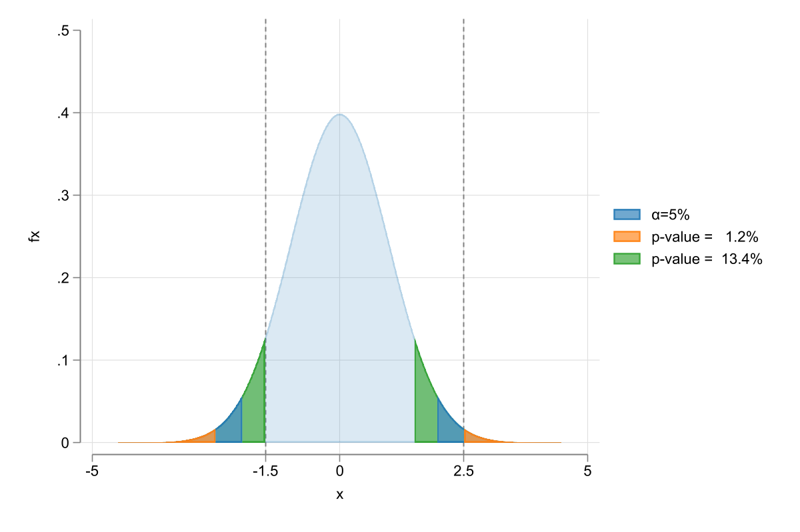

Similar to before, except the one needs to consider both tails of the distribution to determine critical values (see \(t_{N-k-1}(1-\alpha/2)\))
Intuitively, the smaller \(\alpha\) is, the larger the absolute value of “t” needs to be reject the Null.
But, what is an error type I? and why we don’t we “accept” \(H_0\) s?
Why we never accept?:
As stated few times before, \(\hat \beta\) are just approximations to the true \(\beta\) coefficients. Its the “evidence” you have based on the data available.
With this evidence, you can reject some hypothesis. (Some more strongly than others)
However, there could exists many scenarios that would fit the evidence.
Code
clearrange x -5 5 1000gen fx = normalden(x) setscheme white2color_style tableaugen xx = x+1two (area fx x , pstyle(p1) color(%20)) /// (area fx x if x<invnormal(.025), pstyle(p1) color(%80) ) /// (area fx x if x>invnormal(.975), pstyle(p1) color(%80) ) /// (area fx xx , pstyle(p2) color(%20)) /// (area fx xx if x<invnormal(.025), pstyle(p2) color(%80) ) /// (area fx xx if x>invnormal(.975), pstyle(p2) color(%80) ) /// , xline(1.8) legend(order(1 "H0: b=0" 4 "H0: b=1")) ///xlabel(-4(2)4) ylabel(0(.1).5) xsize(8) ysize(4)graphexport images/f4_2.png, height(1000) replace
What about Type error I and II?
Because we do not know the truth, we are bound to commit errors in our assessment of the data.
So given the data evidence and the hypothesis, there could be 2 scenarios:
GOOD: You either reject when \(H_0\) is false, or not reject when \(H_0\) is true.
\(TE-I\): You reject \(H_0\) when it is true,
\(TE-II\): Not reject \(H_0\) when it is false (Something else was true)
Code
clearrange x -5 5 1000gen fx = normalden(x) gen xxx=x+3 two (area fx x , pstyle(p1) color(%20)) /// (area fx xxx, pstyle(p2) color(%20)) /// (area fx x if x>2, pstyle(p1) color(%80)) /// (area fx xxx if xxx <2, pstyle(p2) color(%80)) /// ,legend(order(1 "H0"3 "Type I " 2 "H1" 4 "Type II ") cols(2)) ///xlabel(-4(2)7) ylabel(0(.1).5) xsize(8) ysize(4) graphexport images/f4_3.png, height(1000) replace
Something you may or may not have noticed. The significance level \(\alpha\) can be choosen by the researcher.
Conventional levels are 10%, 5% and 1%.
This may lead to researchers choosing any value that would make their theory fit.
There is a better alternative. Using \(p-values\) to capture the smallest significance level that you could use to reject your Null.
\[p-value = P(|t|>|t-stat|) \text{ or } p-value = 2*P(|t|>|t-stat|)
\]
The smallest the better! (for rejection)
How?
One tail : display 1-t(df = n-k-1, |t-stat|)
two tails: display 2-2*t(df = n-k-1, |t-stat|)
clearrange x -5 5 1000gen fx = normalden(x) local p1:display %5.1f 100*2*(1-normal(1.5)) local p2:display %5.1f 100*2*(1-normal(2.5)) two (area fx x , pstyle(p1) color(%20)) /// (area fx x if x<-1.5, pstyle(p3) color(%80) ) /// (area fx x if x>+1.5, pstyle(p3) color(%80) ) /// (area fx x if x<invnormal(.025), pstyle(p1) color(%80) ) /// (area fx x if x>invnormal(.975), pstyle(p1) color(%80) ) /// (area fx x if x<-2.5, pstyle(p2) color(%80) ) /// (area fx x if x>+2.5, pstyle(p2) color(%80) ) , ///xline(-1.5 2.5) legend(order(4 "{&alpha}=5%" 6 "p-value = `p2'%" 2 "p-value = `p1'%")) ///ylabel(0(.1).5) xlabel(-5 0 5 -1.5 2.5)graphexport images/f4_4.png, replacewidth(1200)

Note on Statistical Significance
Statistically significant doesnt mean meaninful. And lack of it, doesnt mean is not important
Keep in mind that SE may be larger or smaller due to other factors (N or Mcollinearity)
Be careful of discussing the effect size. (a 1US increase in min wage is different from 1chp in min Wage)
If non-significant, pay attention to the magnitude and relevance for your research. Does it have the correct sign?
Incorrect signs with significant results. Either there is something wrong, or you found something interesting.
Confidence Intervals
This is the third approach to assess how precise or significant an estimate is. You provide a Range of possible values, given the level of coverage, and SE.
If we were to draw M samples, the true beta would be in this interval \(1-\alpha\%\) of the time.
It allows you to see what other “hypothesis” would be consistent with the evidence of the estimate (you wouldnt be able to reject the Null)
clearrange x -5 5 1000gen fx = normalden(x) local p1:display %5.1f 100*2*(1-normal(1.5)) local p2:display %5.1f 100*2*(1-normal(2.5)) gen xx = x+2two (area fx x , pstyle(p1) color(%10)) /// (area fx x if x<invnormal(.025), pstyle(p1) color(%60) ) /// (area fx x if x>invnormal(.975), pstyle(p1) color(%60) ) /// (area fx xx , color(gs1%10) ) /// (area fx xx if x<invnormal(.005), color(gs1%80) ) /// (area fx xx if x>invnormal(.995), color(gs1%80) ) /// (area fx xx if x<invnormal(.025), color(gs1%60) ) /// (area fx xx if x>invnormal(.975), color(gs1%60) ) /// (area fx xx if x<invnormal(.05), color(gs1%40) ) /// (area fx xx if x>invnormal(.95), color(gs1%40) ), ///xline(2) legend(order(5 "CI-1%" 7 "CI-5%" 9 "CI-10%")) ///ylabel(0(.1).5) xlabel(-5 0 5 ) graphexport images/f4_5.png, replacewidth(1000)
Lets make things interestings (Harder)
Testing Linear Combinations:
You may be interested in testing particular linear combinations of coefficients:
\(b_1 - b_2 =0 ; b_2+b_3=1 ; 2*b_4-b_5=b_6\)
Doing this is “simple”. Because is a single linear combination, you can still use “t-stat”.
Everything we have seen so far was possible under the normality assumption of the errors.
if \(e\) is normal, then \(b\) is normal (even in small samples), thus we can use \(t\), \(F\), etc
But what if this assumption fails? would we care?
Perhaps. If your sample is small, \(b\) will not be normal, and standard procedures will not work.
In large Samples, however, \(\beta's\) will be normal, even if \(e\) is not. Thanks to CLT
Good news
Bottom line, when \(N\) is large, you do not need \(e\) to be normal.
if A1-A5 hold, you can rely on asymptotic normality!
Thus you can still use t’s and F’s, but you can also use LM
LM-Lagrange Multiplier
While you can still use t-stat and F-stat to draw inference from your model, there is a better test (given the large sample): Lagrange Multiplier Statistic
The idea: Does impossing restrictions affect the model Fitness?
Regress \(y\) on restricted \(x_1,\dots,x_{k-q}\), and obtain \(\tilde e\)
Regress \(\tilde e\) on all \(x's\), and obtain \(R^2_e\).
If the excluded regressors were not significant, the \(R^2_e\) should be very small.
Compare \(nR^2_e\) with \(\chi^2(n,1-\alpha)\), and draw conclusions.